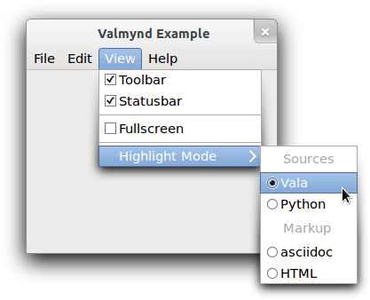

Class
GioMenuModel
since: 2.32
Description [src]
abstract class Gio.MenuModel : GObject.Object
{
priv: GMenuModelPrivate*
}GMenuModel represents the contents of a menu — an ordered list of
menu items. The items are associated with actions, which can be
activated through them. Items can be grouped in sections, and may
have submenus associated with them. Both items and sections usually
have some representation data, such as labels or icons. The type of
the associated action (ie whether it is stateful, and what kind of
state it has) can influence the representation of the item.
The conceptual model of menus in GMenuModel is hierarchical:
sections and submenus are again represented by GMenuModels.
Menus themselves do not define their own roles. Rather, the role
of a particular GMenuModel is defined by the item that references
it (or, in the case of the ‘root’ menu, is defined by the context
in which it is used).
As an example, consider the visible portions of this menu:
An example menu

While this kind of deeply nested menu is no longer considered good UI
practice, it serves as a good example of the concepts in GMenuModel.
There are 8 ‘menus’ visible in the screenshot: one menubar, two
submenus and 5 sections:
- the toplevel menubar (containing 4 items)
- the View submenu (containing 3 sections)
- the first section of the View submenu (containing 2 items)
- the second section of the View submenu (containing 1 item)
- the final section of the View submenu (containing 1 item)
- the Highlight Mode submenu (containing 2 sections)
- the Sources section (containing 2 items)
- the Markup section (containing 2 items)
The example illustrates the conceptual connection between these 8 menus. Each large block in the figure represents a menu and the smaller blocks within the large block represent items in that menu. Some items contain references to other menus.
A menu example
Notice that the separators visible in the example appear nowhere in the menu model. This is because separators are not explicitly represented in the menu model. Instead, a separator is inserted between any two non-empty sections of a menu. Section items can have labels just like any other item. In that case, a display system may show a section header instead of a separator.
The motivation for this abstract model of application controls is
that modern user interfaces tend to make these controls available
outside the application. Examples include global menus, jumplists,
dash boards, etc. To support such uses, it is necessary to ‘export’
information about actions and their representation in menus, which
is exactly what the action group exporter and the menu model exporter do for
GActionGroup and GMenuModel. The client-side
counterparts to make use of the exported information are
GDBusActionGroup and GDBusMenuModel.
The API of GMenuModel is very generic, with iterators for the
attributes and links of an item, see
g_menu_model_iterate_item_attributes() and
g_menu_model_iterate_item_links(). The ‘standard’ attributes and
link types have predefined names: G_MENU_ATTRIBUTE_LABEL,
G_MENU_ATTRIBUTE_ACTION, G_MENU_ATTRIBUTE_TARGET, G_MENU_LINK_SECTION
and G_MENU_LINK_SUBMENU.
Items in a GMenuModel represent active controls if they refer to
an action that can get activated when the user interacts with the
menu item. The reference to the action is encoded by the string ID
in the G_MENU_ATTRIBUTE_ACTION attribute. An action ID uniquely
identifies an action in an action group. Which action group(s) provide
actions depends on the context in which the menu model is used.
E.g. when the model is exported as the application menu of a
GtkApplication,
actions can be application-wide or window-specific (and thus come from
two different action groups). By convention, the application-wide actions
have names that start with app., while the names of window-specific
actions start with win..
While a wide variety of stateful actions is possible, the following is the minimum that is expected to be supported by all users of exported menu information: - an action with no parameter type and no state - an action with no parameter type and boolean state - an action with string parameter type and string state
Stateless
A stateless action typically corresponds to an ordinary menu item.
Selecting such a menu item will activate the action (with no parameter).
Boolean State
An action with a boolean state will most typically be used with a ‘toggle’ or ‘switch’ menu item. The state can be set directly, but activating the action (with no parameter) results in the state being toggled.
Selecting a toggle menu item will activate the action. The menu item should be rendered as ‘checked’ when the state is true.
String Parameter and State
Actions with string parameters and state will most typically be used to represent an enumerated choice over the items available for a group of radio menu items. Activating the action with a string parameter is equivalent to setting that parameter as the state.
Radio menu items, in addition to being associated with the action, will have a target value. Selecting that menu item will result in activation of the action with the target value as the parameter. The menu item should be rendered as ‘selected’ when the state of the action is equal to the target value of the menu item.
Available since: 2.32
Instance methods
g_menu_model_get_item_attribute
Queries item at position item_index in model for the attribute
specified by attribute.
since: 2.32
g_menu_model_get_item_attribute_value
Queries the item at position item_index in model for the attribute
specified by attribute.
since: 2.32
g_menu_model_get_item_link
Queries the item at position item_index in model for the link
specified by link.
since: 2.32
g_menu_model_items_changed
Requests emission of the GMenuModel::items-changed signal on model.
since: 2.32
g_menu_model_iterate_item_attributes
Creates a GMenuAttributeIter to iterate over the attributes of
the item at position item_index in model.
since: 2.32
g_menu_model_iterate_item_links
Creates a GMenuLinkIter to iterate over the links of the item at
position item_index in model.
since: 2.32
Signals
Signals inherited from GObject (1)
GObject::notify
The notify signal is emitted on an object when one of its properties has its value set through g_object_set_property(), g_object_set(), et al.
Class structure
struct GioMenuModelClass {
GObjectClass parent_class;
gboolean (* is_mutable) (
GMenuModel* model
);
gint (* get_n_items) (
GMenuModel* model
);
void (* get_item_attributes) (
GMenuModel* model,
gint item_index,
GHashTable** attributes
);
GMenuAttributeIter* (* iterate_item_attributes) (
GMenuModel* model,
gint item_index
);
GVariant* (* get_item_attribute_value) (
GMenuModel* model,
gint item_index,
const gchar* attribute,
const GVariantType* expected_type
);
void (* get_item_links) (
GMenuModel* model,
gint item_index,
GHashTable** links
);
GMenuLinkIter* (* iterate_item_links) (
GMenuModel* model,
gint item_index
);
GMenuModel* (* get_item_link) (
GMenuModel* model,
gint item_index,
const gchar* link
);
}No description available.
Class members
parent_class: GObjectClassNo description available.
is_mutable: gboolean (* is_mutable) ( GMenuModel* model )No description available.
get_n_items: gint (* get_n_items) ( GMenuModel* model )No description available.
get_item_attributes: void (* get_item_attributes) ( GMenuModel* model, gint item_index, GHashTable** attributes )No description available.
iterate_item_attributes: GMenuAttributeIter* (* iterate_item_attributes) ( GMenuModel* model, gint item_index )No description available.
get_item_attribute_value: GVariant* (* get_item_attribute_value) ( GMenuModel* model, gint item_index, const gchar* attribute, const GVariantType* expected_type )No description available.
get_item_links: void (* get_item_links) ( GMenuModel* model, gint item_index, GHashTable** links )No description available.
iterate_item_links: GMenuLinkIter* (* iterate_item_links) ( GMenuModel* model, gint item_index )No description available.
get_item_link: GMenuModel* (* get_item_link) ( GMenuModel* model, gint item_index, const gchar* link )No description available.
Virtual methods
Gio.MenuModelClass.get_item_attribute_value
Queries the item at position item_index in model for the attribute
specified by attribute.
since: 2.32
Gio.MenuModelClass.get_item_attributes
Gets all the attributes associated with the item in the menu model.
Gio.MenuModelClass.get_item_link
Queries the item at position item_index in model for the link
specified by link.
since: 2.32
Gio.MenuModelClass.iterate_item_attributes
Creates a GMenuAttributeIter to iterate over the attributes of
the item at position item_index in model.
since: 2.32
Gio.MenuModelClass.iterate_item_links
Creates a GMenuLinkIter to iterate over the links of the item at
position item_index in model.
since: 2.32